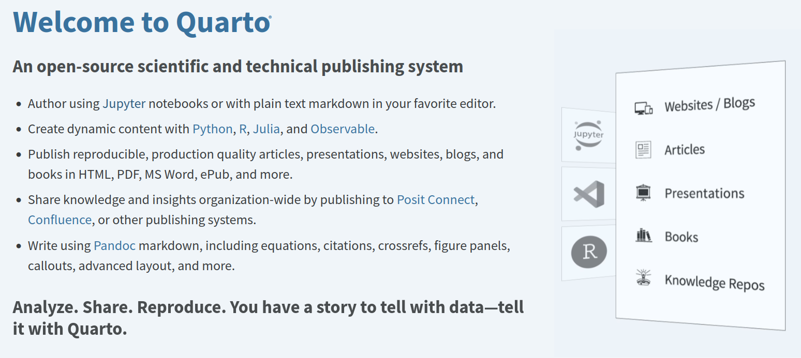
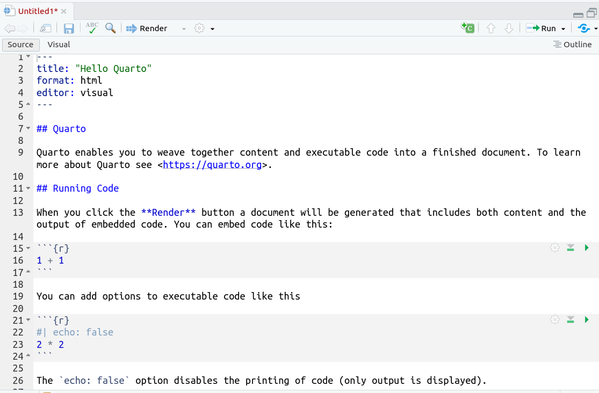
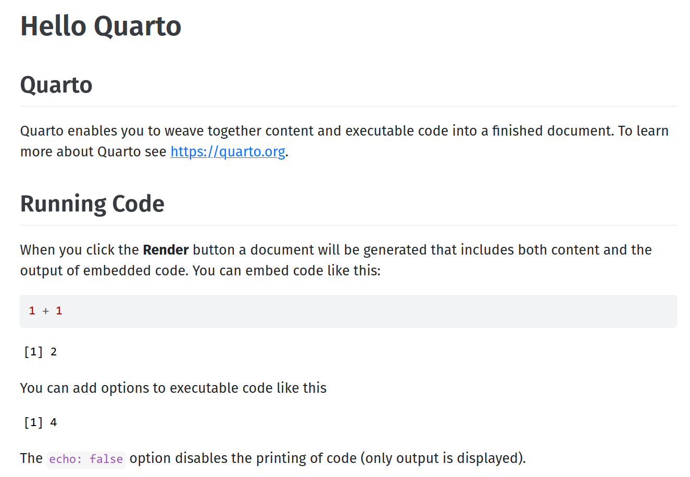
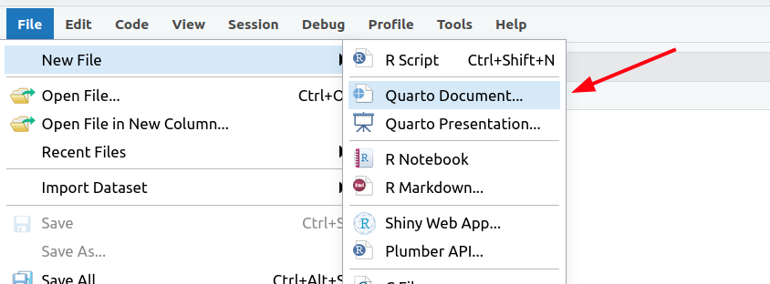
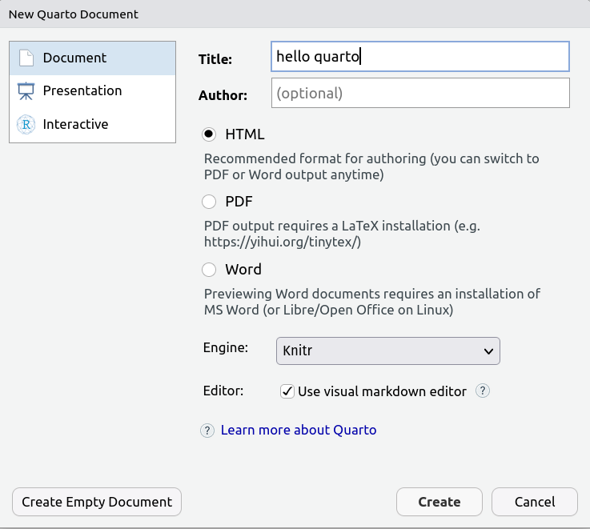
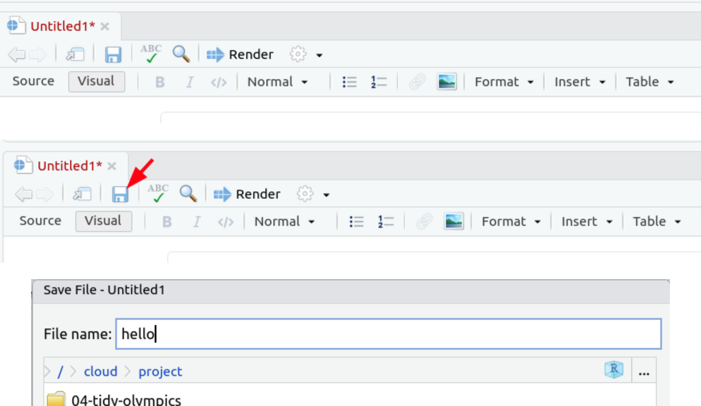
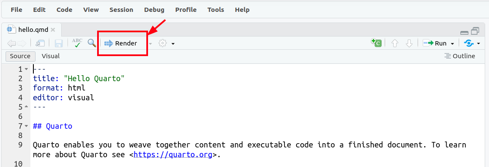
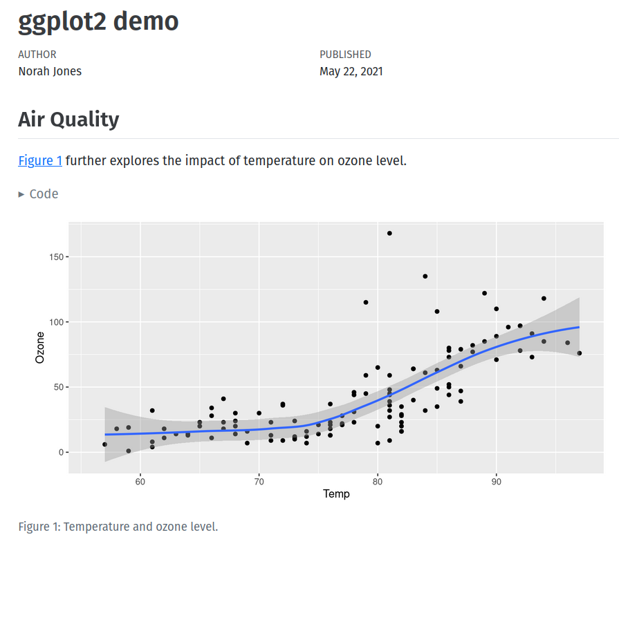
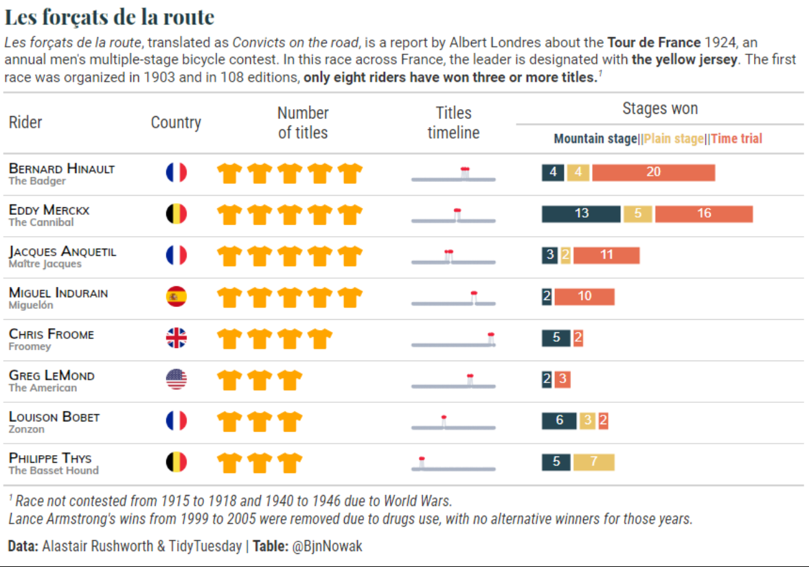
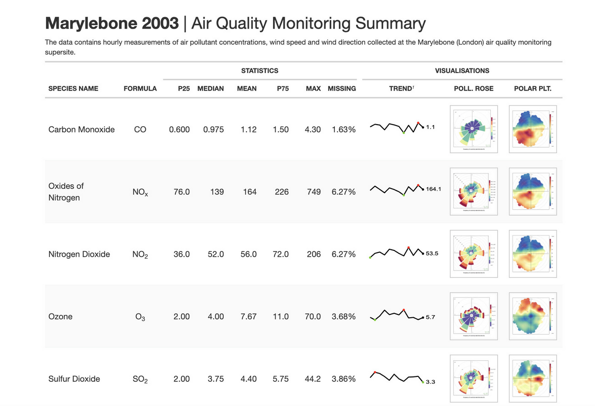

Sonuçların ve çıktıların paylaşılması
2025-05-23
Communicate
What good is an image/analysis/result if you are unable to communicate

source: imgflip
Tidy workflow
Communicating your findings is part of Data analysis/Data science

source: R for Data Science
Packages we have learned so far specialize in one part of the workflow. Quarto (also RMarkdown) helps communicating our results.

Quarto (aside RMarkdown)
Tip
RMarkdown is still actively used but please use Quarto
How it works
- A compute engine (
knitrfor R or Jupyter Notebook) will compute and run your code chunks and embed their results in Markdown file - Pandoc will convert markdown format into various formats

source: Tutorial: Hello, Quarto
Markdown hakkında
Markdown formatı hakkında bilgi almak için Quarto sitesindeki Markdown Basics adresini ziyaret ediniz.
Quarto document is a plain text file which can be rendered into … 
… HTML
Your turn
Let’s create our first Quarto document and then render it.
quarto is installed in rstudio.cloud project. If you’re using your local RStudio, you might need to install quarto in your own computer (instructions).
Provide title for your document (this is not filename!)
We have Untitled file, let’s save this file
Now, we are ready to Render the document
The rendered HTML document will be opened automatically in your browser
Editor
You can use Source (left) or Visual editor (right) when editing your Quarto document.

Plotting images
Let’s imagine your’re preparing a document with plots. Probably, you’ll prepare the plot in Excel (or some other software) and then copy/paste it into Word.
If data changes later, then you have to repeat both preparing the plot and updating the Word steps.
In case of Quarto (or Jupyter Notebook), you just need to re-render the document. Images, tables and text will be updated at once.
Also, your Quarto document will contain the the recipe (i.e. the code) used for preparing the final document.
Consider the Quarto document in next slide, it draws a plot using airquality data set using ggplot. As you have noticed, there’s no saving a file and then copying it in order to include the image file.
---
title: "ggplot2 demo"
author: "Norah Jones"
date: "5/22/2021"
format:
html:
fig-width: 8
fig-height: 4
code-fold: true
---
## Air Quality
@fig-airquality further explores the impact of temperature on ozone level.
```{r}
#| label: fig-airquality
#| fig-cap: "Temperature and ozone level."
#| warning: false
library(ggplot2)
ggplot(airquality, aes(Temp, Ozone)) +
geom_point() +
geom_smooth(method = "loess"
)
```- lines 1-10 (called YAML header) describe document properties
- line 14 contains citation to the image (which will be calculated as Figure 1 automatically)
- lines 16-27 contains the R code chunk and lines 17-19 contains chunk options
This document will be rendered as follows

As you have noticed, the figure number is determined automatically, the caption is placed under the image, the code is folded (will be revealed when clicked)
Pandoc can convert markdown format into HTML, PDF or Word (actually many more). Let’s convert the same document into three different formats by changing the format: html into either format: pdf or format: docx

For converting to PDF version, you have to install separate software
More code chunk options
In HTML format, you can show the tables (data frames, tibbles) as HTML tables (browsing next page) just like in RStudio.
Let’s add the following chunk to our document and then render it (also add df-print: paged option in document properties)
```{r}
#| echo: false
#| warning: false
#| cache: true
library(tidyverse)
mpg_avg <- mpg |>
group_by(manufacturer, cyl) |>
summarize(avg_cty=mean(cty), avg_hwy=mean(hwy))
mpg_avg
```Let’s go over the chunk options: echo: false means that the code will not be shown in final document, warning: false will suppress any warning or messages, cache: true means that the calculation in that chunk will be cached and won’t be re-calculated (unless chunk is modified) in following renderings.
Packages for better tables
There are numerous R packages for generating beautiful tables to be embedded into HTML or PDF formats. {reacttable} and {gt} are very capable, professional looking tables can be easily prepared with these packages.
Especially {gt} package is very capable. Please visit its introduction site and gallery
gt table example
gt table example 1
Inline code
Again, let’s imagine, in our document we want to have statements like “the dataset contained 234 rows”. We’d face the same challenge if data is updated, we have to locate such statements scattered in our document and then update one by one. Actually, you can have inline R code have such calculations embedded by code.
The rendering of following line in Quarto document is shown in next slide.
And much more
Quarto supports much more features; citations, formulas, cross references, callouts, publishing. Please review the contents of the following quarto document (please scroll down to view whole source). The published version is found here
---
title: "ggplot2 demo"
author: "alper"
date: "6/1/2023"
toc: true
number-sections: true
bibliography: references.bib
format:
html:
fig-width: 8
fig-height: 4
code-fold: true
code-link: true
df-print: paged
pdf:
geometry:
- top=30mm
- left=30mm
docx: default
---
# Air Quality
@fig-airquality further explores the impact of temperature on ozone level.
```{r}
#| label: fig-airquality
#| fig-cap: "Temperature and ozone level."
#| echo: true
#| warning: false
library(tidyverse)
library(ggplot2)
ggplot(airquality, aes(Temp, Ozone)) +
geom_point() +
geom_smooth(method = "loess"
)
```
## mpg scatter plot
@fig-scatterplot shows correlation between highway and city mileages.
```{r}
#| label: fig-scatterplot
#| fig-cap: "City and highway mileage for 38 popular models of cars."
#| fig-alt: "Scatterplot of city vs. highway mileage for cars, where points are colored by the number of cylinders. The plot displays a positive, linear, and strong relationship between city and highway mileage, and mileage increases as the number of cylinders decreases."
#| fig-width: 6
#| fig-height: 3.5
ggplot(mpg, aes(hwy, cty, color=cyl)) +
geom_point(alpha=0.5, size=2) +
scale_color_viridis_c() +
theme_minimal()
```
## the mpg data as table
There are 32 observations in our data.
```{r}
#| echo: false
#| warning: false
#| cache: true
mpg |>
group_by(manufacturer, cyl) |>
summarize(avg_cty=mean(cty), avg_hwy=mean(hwy))
```
Hypothetical `table_viewer` will show your tables in a much better way.
```{r}
#| eval: false
table_viewer(mpg)
```
# Formulas
you can have formulas in your document
$$
price = \hat{\beta}_0 + \hat{\beta}_1 \times area + \epsilon
$$
# Citations
We're going to do this analysis using literate programming [@Knuth1984].
# Layout
## Callouts
::: {.callout-note}
Here's some information
:::Shiny
Shiny allows your users to interact with your content (i.e a web app) online without requiring any web development skills.
In a Shiny web app, web elements (text input, drop down menus, sliders, etc.) are used as input for your R code where the code is update upon user input.
Please visit the Gallery and interact with the demos.
Additional resources about Quarto
Please visit these sites for more information about Quarto and its capabilities
- Quarto Gallery site has lots of examples
- Quarto guide
- Quarto chapter at R for Data Science book
- Posit Quarto cheetsheet
- DataCamp Quarto Cheatsheet
Bu sunumun kaynak kodu
Şu anda görüntülediğiniz sunum da Quarto ile hazırlanmıştır. Kaynak kodlarını alperyilmaz/mbg4181 Github sayfasında inceleyebilirsiniz.